実際の練習問題を通して、スクレイピングの仕方を理解しよう
映画レビューサイトの実装をする前にまずは映画レビューサイトに必要な映画のデータを用意しましょう。映画レビューサイトではヘッダー部分からレビューを投稿することができます。

レビューを投稿するときにレビューをつける映画を選択します。
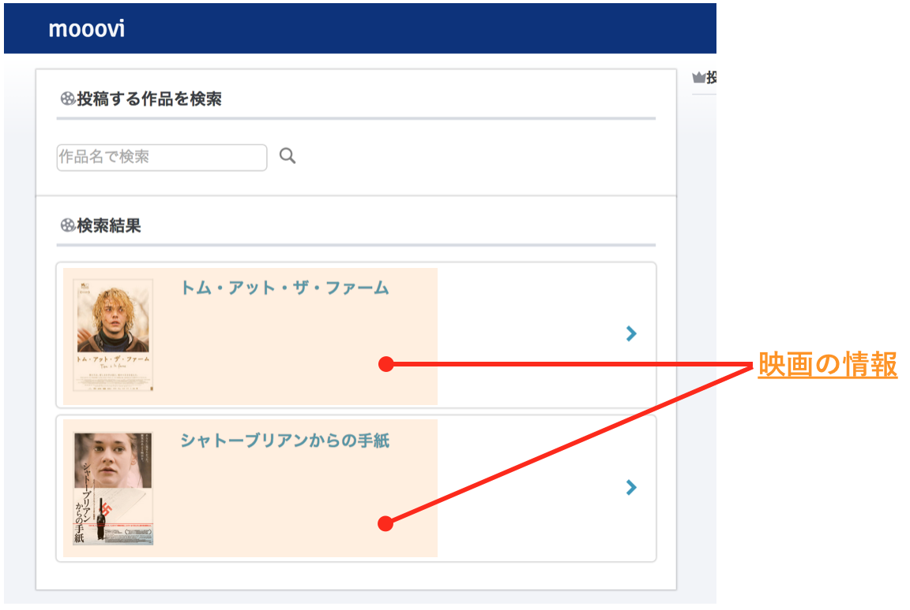
レビューはユーザーが生成する情報です。では、この映画の情報はどこにあるのでしょうか？これはあらかじめ、アプリケーションのデータベースに映画の情報を入れておくのです。
どうやってデータベースに映画の情報を用意するのでしょうか。１つ１つ自力でデータベースに映画のタイトルや画像の情報を入れるのは大変すぎますね。そこでプログラムを使って映画の情報を自動で取得してきましょう。
そこで使うのがスクレイピングと呼ばれる技術です。
スクレイピングを使って映画の情報を取得しましょう。
スクレイピングとは、ウェブサイト上のHTMLからある特定のデータを抜き出す処理のことを言います。
外部のサーバーからデータを抽出し、集計をしたりするときに役立ちます。
例えば、以下のようなHTMLのサイトがあった場合
1 2 3 4 5 |
<ul>
<li>TEST1</li>
<li>TEST2</li>
<li>TEST3</li>
</ul>
|
<ul><li>の中にある「TEST1、TEST2、TEST3」等の値を取り出すことを言います。
映画レビューサイトで使用するための映画情報をスクレイピングで取得しましょう。
今回は映画の情報が欲しいので映画.comという映画情報サイトから、スクレイピングで映画作品データを取得して「非公開」で利用します。
データの著作権は映画.com側に所属するので、一般公開をすることはできません
映画.comのサイトはこちら → 映画.com
では実際にスクレイピングでHTML内のデータを取得してみましょう。スクレイピングにはMechanizeというGemが必要です。
Mechanizeはスクレイピングを行うためのGemです。MechanizeのGemを入れるとMechanizeクラスが使えるようになります。このMechanizeクラスにはスクレイピングをするための様々なメソッドが用意されています。
では、Mechanizeを入れてみましょう。MechanizeはGemなのでGemfileにMechanizeを使用するという記述をします。
Mechanizeという、スクレイピング用のGemを使用します
1 |
gem 'mechanize'
|
ではMechanizeをインストールします。Gemfileに記述されたGemをインストールするにはターミナルでコマンドbundle installを打ち込みます。
bundle installで先程追記したMechanizeをインストールします(時間がかかる場合があります)
1 |
$ bundle install
|
エラーなくbundle installが成功すると、以下のような「bundle complete!」という表示がされます。
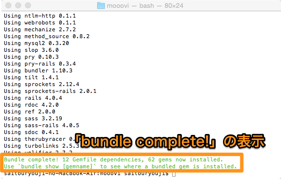
Mechanizeを使ってスクレイピングをするには、まずMechanizeクラスのインスタンスを生成します。
1 |
agent = Mechanize.new # Mechanizeクラスのインスタンスを生成
|
次にMechanizeクラスのインスタンスメソッドgetメソッドを使ってスクレイピングしたいウェブサイトのHTMLを取得します。
getメソッドはMechanizeクラスのインスタンスメソッドです。get("スクレイピングしたいウェブサイトのURL")と引数にURLの文字列を指定することで、そのURLのウェブサイトのHTMLを取得します。
1 2 |
agent = Mechanize.new
page = agent.get("http://eiga.com/") # 映画.comのHTMLを取得
|
ここで取得できたpageは単なるHTMLの文字列ではなくそのウェブサイトのHTMLの情報を持ったMechanize::Pageオブジェクトです。
1 2 3 4 |
agent = Mechanize.new
page = agent.get("http://eiga.com/") # 映画.comのHTMLを取得
puts page
# <Mechanize::Page:0x007fcdda803dd8>
|
pageがMechanize::Pageオブジェクトであることが確認できました
特定のhtmlタグ情報を取得するには searchメソッド を使います。
searchメソッドはgetメソッドで取得したページの情報が入ったオブジェクトに対して使用します。これを使うと取得したウェブサイトのHTML情報の中から指定したHTML要素の内容を検索できます。
該当するHTMLのタグ要素が1つでも、返り値は配列の形式で返ってきます。
searchメソッドは以下のような使い方をします。
1 |
elements = Mechanize::Pageオブジェクト.search('セレクタ')
|
引数のセレクタとはCSSのようにHTMLのタグの要素名を指定します。'h1'や'li a'のような指定です。
では、例として映画.comのページ(http://eiga.com/)からh1要素のHTMLの情報を取得してみます。
1 2 3 4 |
agent = Mechanize.new
page = agent.get("http://eiga.com/")
elements = page.search('h1') # h1要素を検索
puts elements
|
これを実行すると以下のような出力を得られます。
1 |
<h1>映画のことなら映画.com 最新映画情報・プレゼント・試写会・映画ニュース・映画ファン必見！</h1>
|
ちゃんと、映画.comのh1要素のHTMLの情報が取得できました。
次はli要素の下のa要素のHTML情報を取得してみます。
1 2 3 4 |
agent = Mechanize.new
page = agent.get("http://eiga.com/")
elements = page.search('li a') # li要素の下のa要素を検索
puts elements
|
これを実行すると以下のような出力を得られます。
1 2 3 4 5 6 7 |
<a href="/movie/80316/"><strong>近キョリ恋愛</strong></a>
<a href="/person/84664/">山下智久</a>
<a href="/person/275455/">小松菜奈</a>
<a href="/person/71668/">水川あさみ</a>
<a href="/movie/78507/"><strong>ヘラクレス</strong></a>
<a href="/person/33446/">ドウェイン・ジョンソン</a>
# 多すぎるので以下略
|
このように、該当するHTMLのタグ要素全てが取得されます。
例として、searchメソッドの返り値が本当に配列の形式になっていることを確認するために、以下のような例のコードを試してみます。
1 2 3 4 5 6 |
require 'mechanize'
agent = Mechanize.new
page = agent.get("http://eiga.com/")
elements = page.search('li a') # li要素の下のa要素を検索
puts elements[0]
|
これを実行すると以下のような出力を得られます。
1 |
<a href="/movie/80316/"><strong>近キョリ恋愛</strong></a>
|
このように、返ってきた値の1番目の要素をとりだすことができるので配列の形式で返ってきていることが分かります。
では、searchメソッドで指定した要素のHTMLからテキストやリンク先を取得しましょう。
searchメソッドで得られたHTML情報のテキストを取得したい場合、inner_textメソッドを使います。
例えば、先ほどのsearchメソッドから取得した'li a'要素の一覧を見てみましょう。
1 2 3 4 |
agent = Mechanize.new
page = agent.get("http://eiga.com/")
elements = page.search('li a') # li要素の下のa要素を検索
puts elements
|
ターミナルの出力
1 2 3 4 5 6 7 |
<a href="/movie/80316/"><strong>近キョリ恋愛</strong></a>
<a href="/person/84664/">山下智久</a>
<a href="/person/275455/">小松菜奈</a>
<a href="/person/71668/">水川あさみ</a>
<a href="/movie/78507/"><strong>ヘラクレス</strong></a>
<a href="/person/33446/">ドウェイン・ジョンソン</a>
# 多すぎるので以下略
|
これらの要素のテキスト、すなわち「近キョリ恋愛、山下智久、小松菜奈、...」が欲しい場合は以下のようにします。
1 2 3 4 5 6 7 |
agent = Mechanize.new
page = agent.get("http://eiga.com/")
elements = page.search('li a')
elements.each do |ele|
puts ele.inner_text
end
|
ターミナルの出力
1 2 3 4 5 6 7 8 |
近日公開映画
近キョリ恋愛
山下智久
小松菜奈
水川あさみ
ヘラクレス
ドウェイン・ジョンソン
# 多すぎるので以下略
|
ちゃんとHTML情報のテキストだけが抜き出されました。searchメソッドでは該当する要素のHTML情報がすべて取得できるのでeachメソッドを使って、１つ１つのオブジェクトに対してinner_textメソッドを呼び出します。
aタグ要素のHTMLはリンク先のURLを値とする属性hrefを持っています。このようなHTMLの属性の値を取得したい場合、get_attributeメソッドを使います。get_attribute(属性)で指定した属性の値を取得できます。また、.get_attribute(属性)は[:属性]と簡略化して書くこともできます。
1 2 3 4 5 6 7 |
<a href="/movie/80316/"><strong>近キョリ恋愛</strong></a>
<a href="/person/84664/">山下智久</a>
<a href="/person/275455/">小松菜奈</a>
<a href="/person/71668/">水川あさみ</a>
<a href="/movie/78507/"><strong>ヘラクレス</strong></a>
<a href="/person/33446/">ドウェイン・ジョンソン</a>
# 多すぎるので以下略
|
この中からhref="リンク先"の「リンク先」を抜き出しましょう。HTML情報のオブジェクトにメソッドattribute('href')を使います。
1 2 3 4 5 6 7 |
agent = Mechanize.new
page = agent.get("http://eiga.com/")
elements = page.search('li a')
elements.each do |ele|
puts ele.get_attribute('href') # puts ele[:href]としても良い
end
|
ターミナルの出力
1 2 3 4 5 6 7 |
/movie/80316/
/person/84664/
/person/275455/
/person/71668/
/movie/78507/
/person/33446/
# 多すぎるので以下略
|
ちゃんと属性hrefの値だけ抜き出すことができました。
このようにMechanizeクラスを使えばウェブサイト上のHTMLのデータを自由に取得することができます。
Mechanizeを使ったスクレイピングの手順をまとめましょう。
ではこれからMechanizeを使って実際にスクレイピングをしてみます。ここでのスクレイピングの練習はRubyファイルを作成して行います。スクレイピング用のRubyファイルscraping.rbをデスクトップに作成してください。
scraping.rbを作成してください
Sublime Textを選択している状態で、
①command + Nでファイルを新しく作成します。
②command + Sでファイルを保存します。
③ファイル名を scraping.rb と編集し、保存先にデスクトップを選択してください。
では作成したRubyファイルscraping.rbをSublime Textで開きましょう。
Mechanizeクラスは外部のクラスなのでそのままでは使えません。よって、Rubyファイルの一番上でMechanizeクラスを使うことを宣言しましょう。宣言にはrequireを使います。
scraping.rbの一番上にMechanizeクラスを使うことを宣言する一行を追加しましょう
1 |
require 'mechanize'
|
これでMechanizeクラスが使えるようになりました。Mechanizeクラスのインスタンスを生成しましょう。
1 2 3 4 |
require 'mechanize'
agent = Mechanize.new
puts agent # インスタンスを生成できたか確認
|
上のような編集ができたら、ターミナルで ruby scraping.rb と入力し実行しましょう。
これでスクレイピングをする準備はできました。
以下のスクレイピング用に用意したウェブページをスクレイピングしてみます。
http://mooovi.tech-camp.in/works/initial_scraping
「TEST1, TEST2, TEST3」と書いてあるだけです。この「TEST1, TEST2, TEST3」というテキストを取得しましょう。まずはこのページのHTML構造を確認します。
http://mooovi.tech-camp.in/works/initial_scraping
上記のサイトにアクセスして、[command] + [option] + [u]を押してソースコードを表示させてください。
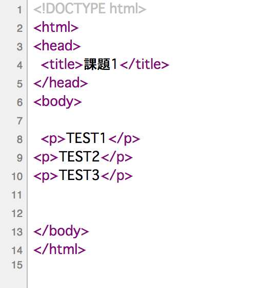
“TEST1”, “TEST2”, “TEST3” は、pタグに囲まれていることがわかります。このようにスクレイピングをするときはスクレイピングしたいウェブページのHTML構造を確認することが大切です。
では、このウェブページからスクレイピングで「TEST1, TEST2, TEST3」を抜き出すプログラムをscraping.rbに書きましょう。
まずはgetメソッドでウェブページのHTMLの情報を取得します。
まずは、scraping.rbを以下のように編集します。
1 2 3 4 |
require 'mechanize'
agent = Mechanize.new
page = agent.get("http://mooovi.tech-camp.in/works/initial_scraping")
|
HTML構造を確認すると「TEST1, TEST2, TEST3」はそれぞれpタグ要素に囲まれています。searchメソッドでpタグ要素を取得しましょう。
1 2 3 4 5 6 |
require 'mechanize'
agent = Mechanize.new
page = agent.get("http://mooovi.tech-camp.in/works/initial_scraping")
elements = page.search('p')
puts elements
|
ここまで書けたら、下記のコマンドでscraping.rbを実行します。
1 2 3 4 |
#Desktopに移動
$ cd ~/Desktop
#scraping.rbを実行
$ ruby scraping.rb
|
ターミナルには以下のように表示されると思います。
1 2 3 |
<p>TEST1</p>
<p>TEST2</p>
<p>TEST3</p>
|
ちゃんとすべてのpタグ要素が取得できています。あとはinner_textメソッドでテキストを取得しましょう。
1 2 3 4 5 6 7 8 9 |
require 'mechanize'
agent = Mechanize.new
page = agent.get("http://mooovi.tech-camp.in/works/initial_scraping")
elements = page.search('p')
elements.each do |ele|
puts ele.inner_text
end
|
pタグ要素は複数あるのでeachメソッドを使ってオブジェクト一つ一つにたいしてinner_textメソッドを使います。このプログラムを実行すると以下のようにターミナルに表示されます。
1 2 3 |
TEST1
TEST2
TEST3
|
テキスト「TEST1, TEST2, TEST3」が取得できました。
各問題用のウェブサイトには、「Q0-TEST0」といったテキストが書かれています。それらは問題ごとにHTMLの構造が異なります。HTML構造を確認しながら、表示されている文字列から該当するものをスクレイピングで取得しましょう。
作業ファイルはscraping.rbです。問題ごとにそれまで書いていたソースコードは全て消して新しく書いていきましょう。
それでは映画レビューサイトを開発するにおいて、映画.comから映画の情報を取得しましょう。
映画.comには映画情報が載っているページはたくさんありますがその中から今回は「上映中の映画」のデータを取得しましょう。「上映中の映画」ページは以下のリンクから遷移できます。
このページには20件の映画情報が載っています。まずはこのページにある20件の映画情報をスクレイピングで取得しましょう。
映画の情報と言っても作品名、監督名、公開日など様々なものがあります。とりあえず今回は最低限の情報として「作品名」と「作品画像のURL」を取得しましょう。
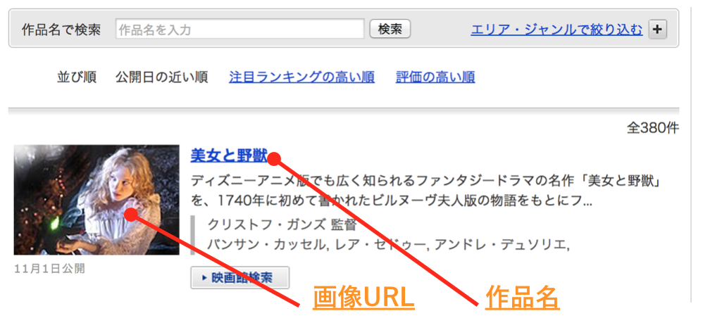
映画の「作品名」と「作品画像のURL」を取得するスクレイピングのプログラムを書くためのRubyファイルを作成しましょう。作品名のスクレイピング用のRubyファイルscraping_title.rb 、作品画像のスクレイピング用のRubyファイルscraping_image.rb 、をデスクトップに作成してください。
scraping_title.rbとscraping_image.rbを作成してください
まずはスクレイピングするウェブサイトのHTML構造を調べてみましょう。
開発者ツールを使えば、HTMLが見やすいです
まずは、開発者ツールを利用して作品名がある要素のHTML構造を確認しましょう。
HTMLを確認してみると、作品名はどこに存在するかというのがわかるとおもいます。
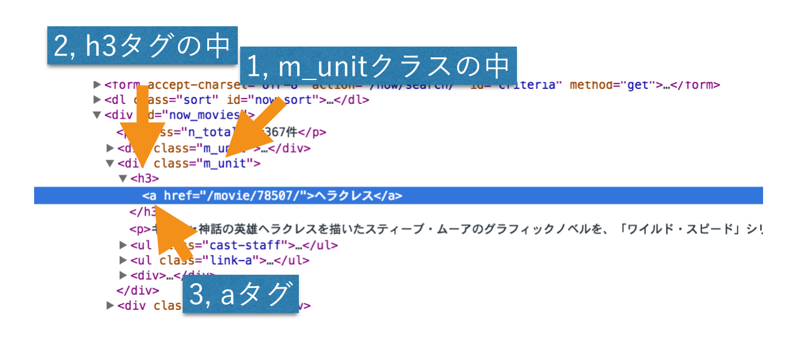
あとは、このHTML構造にたいしてスクレイピングのプログラムを書くだけです。作業ファイルはscraping_title.rbです。
作品名が取得できたので、次は作品画像のURLを取得しましょう。
先ほどのように画像に対して開発者ツールの要素の検証をして、HTMLの構造を確認しましょう。作業ファイルはscraping_image.rbです。
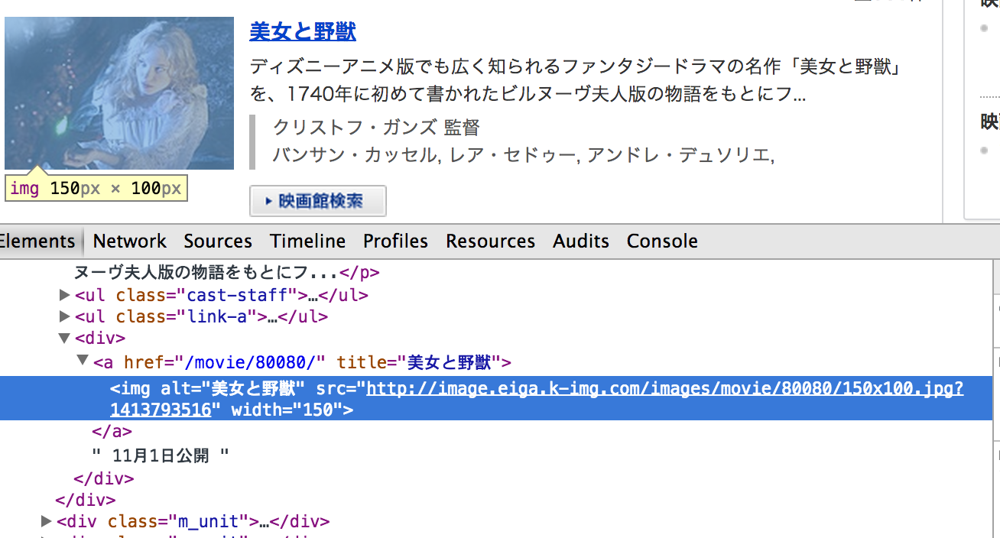
では、作品名と同じように表示されている20件の映画の作品画像URLをスクレイピングで取得しましょう。
作品画像のURLを取得することができました。では試しに取得できた画像を開いてみてください。
画像が小さいですね。あとカバー写真というよりは映画のワンシーンのような画像です。これでは表示させるとき少し物足りないです。
そこでちゃんとした作品画像を取り直しましょう。映画.com(上映中の映画)でどれかの映画をクリックしてみましょう。その映画の個別ページに移動しました。そこに良さそうな画像があります。
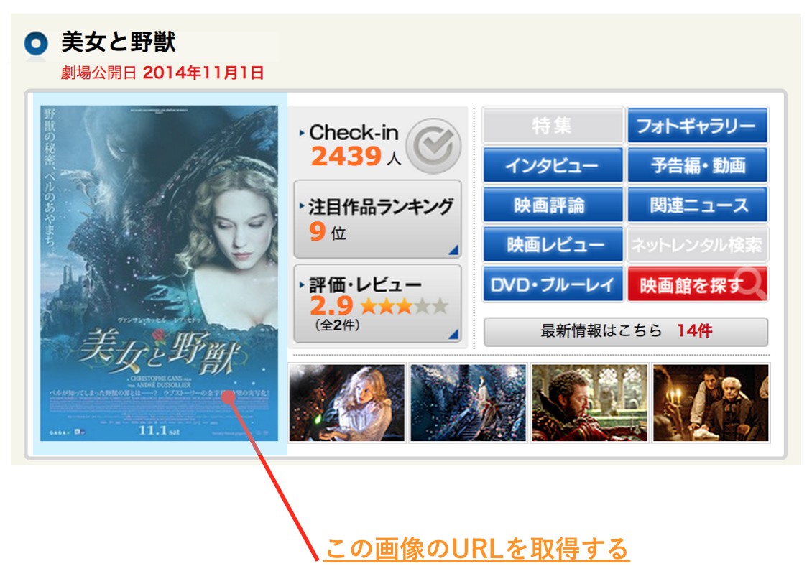
この作品画像を取得しましょう。
では、まず映画.com(上映中の映画)に表示されている映画ならどれでもいいので個別ページに移動しましょう。
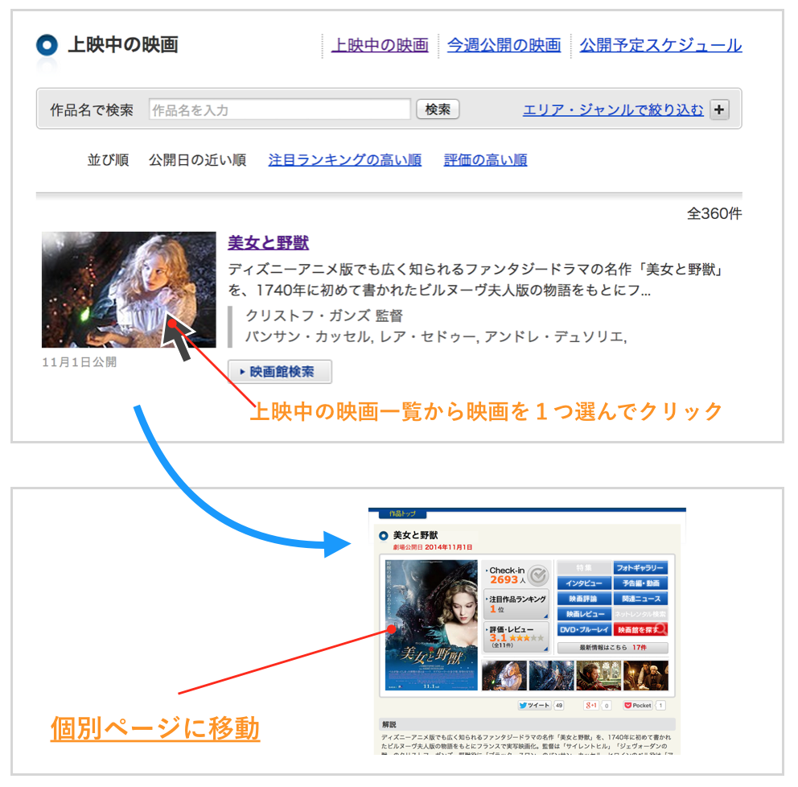
移動できたらそのページの作品画像URLを取得してみましょう。作業ファイルはscraping_image.rbです。先ほど書いたソースコードは使わないので消してしまいましょう。
先ほどは映画.com(上映中の映画)で表示されている20件の映画の中から1つだけ選んで、その個別ページから作品画像のURLを取得しました。
次は20件すべての映画の個別ページから作品画像のURLを取得しましょう。もちろんすべてプログラムで自動で取得します。
以下のような流れでスクレイピングをします。
以下のようにスクレイピングのプログラムを書きましょう。
10 11 12 13 14 15 16 17 18 19 |
require 'mechanize'
links = [] # 個別ページのリンクを保存する配列
agent = Mechanize.new
current_page = agent.get("http://eiga.com/now/")
# 個別ページのリンクを取得
links.each do |link|
# 個別ページから作品画像のURLを取得
end
|
これで映画レビューサイトで必要な映画の情報「作品名」と「作品画像」がスクレイピングで取得できました。あとは得たこの情報をデータベースに入れるだけです。 ここからは映画レビューアプリケーションのディレクトリmoooviで作業をしましょう。
映画の情報を扱うモデルとしてProductモデルを作成しましょう。このProductモデルに対応するproductsテーブルは以下のカラムを持っています。
| カラム名 | 型 | 情報 |
|---|---|---|
| title | String | 作品名 |
| image_url | Text | 作品画像のURL |
では、Productモデルを作成し、上記のカラムを持ったテーブルの作成をしましょう。
では、今まで書いてきたスクレイピングのメソッドを利用して「映画.com」から映画情報を取得し、データベースに保存するメソッドを書きましょう。
先ほどまではDesktopにRubyファイルを作って実行していますが、今回は取得した情報をデータベースへ保存する必要があるのでmoooviディレクトリの中にファイルを作成し、ソースコードを書いていきます。
mooovi > app > models 内にscraping.rbというファイルを作成します。
この時、sublime text上から直接ファイルを作成します。
①「mooovi」>「app」>「models」を右クリックし、「new file」を選択しましょう
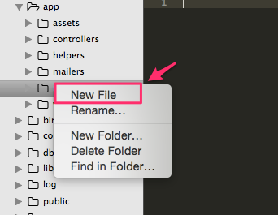
下記のように「untitled」という空のファイルが開かれます。
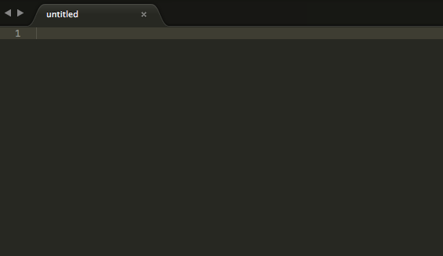
②「⌘ (コマンド)+ sキー」を実行し、ファイル保存画面を開きましょう
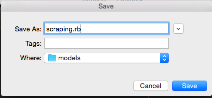
③「scraping.rb」というファイル名で保存しましょう
その後、以下のようなディレクトリ構造になっていることを確認してください。
先ほど作成したscraping.rbというファイルにスクレイピング関連のメソッドを記述していきます。
下記のように編集してください。
1 2 3 4 5 6 7 8 9 10 11 |
class Scraping
def self.movie_urls
puts 'get movies link URL'
# ここに処理を書く
end
def self.get_product(link)
puts 'get movie information'
# ここに処理を書く
end
end
|
クラスメソッドmovie_urlsとget_productがありますね。この中に具体的な処理を書いていきます。
このクラスメソッドmovie_urlsは、rails cをしている状態で実行することができます。
まずrails cコマンドを打ち、クラスメソッドmovie_urlsを実行してみましょう。
rails cを立ち上げ、クラスメソッドmovie_urlsを実行してみましょう1 2 3 4 5 6 |
#rails コンソールの立ち上げ
$ rails c
#Scrapingクラスのクラスメソッド movie_urls の実行
pry(main)> Scraping.movie_urls
get movies link URL
=> nil
|
"get movies link URL"と表示されればクラスメソッドmovie_urlsは正常に実行できています。
scraping.rbに記述されているScrapingクラスのクラスメソッドmovie_urlsは表示されている20件分の映画の個別ページのリンクURLを取得して、そのリンクをクラスメソッドget_productを渡す処理をします。
1 2 3 4 |
def self.movie_urls
# 映画の個別ページのURLを取得
# get_product(link)を呼び出す
end
|
scraping.rbに記述されているScrapingクラスのクラスメソッドget_productは引数として渡された個別ページのリンクURLを使って「作品名」と「作品画像のURL」をスクレイピングし、それらをproductsテーブルに保存する処理を書きます。
1 2 3 4 |
def self.get_product(link)
# 「作品名」と「作品画像のURL」をスクレイピング
# スクレイピングした「作品名」と「作品画像のURL」をProductsテーブルに保存
end
|
puts 'get movies link URL'とputs 'get movie information'は消してかまいません。
今まで書いたスクレイピングのRubyファイル、scraping_title.rbとscraping_image.rbを用いて映画の「作品名」と「作品画像のURL」を取得し、productsテーブルにその情報を保存する処理をscraping.rbに書きましょう。
コンソール起動中にコードを修正・追記した際、コンソールはリアルタイムで変更内容を反映してくれません。
その際は通常、一度exitして再度 rails c コマンドを打ちコンソールを再起動するという手順を踏みますが、 reload! コマンドを実行すると毎回exitせずともコンソールがコードの変更内容を読み込んでくれるので大変便利です。
今後コンソールで何かを実行する前には reload! コマンドの実行を忘れないようにしてください。
以下では、先ほど実行したScrapingクラスのクラスメソッド movie_urls を例にとって実際の動作を示しています。
11 12 13 14 15 16 17 18 19 20 21 22 23 24 25 26 27 28 29 |
[1] pry(main)> Scraping.movie_urls
get movies link URL
#=> nil
## movie_urlsメソッド内の文字列「get movies link URL」を「リロードのテストです」に変更
#reload!をかけずに再度実行した場合は変更内容が反映されない
[2] pry(main)> Scraping.movie_urls
get movies link URL
#=> nil
#reload!をかけてから再度実行すると編集内容が反映される
[3] pry(main)> reload!
Reloading...
#=> true
[4] pry(main)> Scraping.movie_urls
# リロードのテストです
#=> nil
|
1 2 3 4 5 6 7 8 9 10 11 12 13 14 15 16 17 18 |
class Scraping
def self.movie_urls
#①linksという配列の空枠を作る
#②Mechanizeクラスのインスタンスを生成する
#③映画の全体ページのURLを取得
#④全体ページから映画20件の個別URLのタグを取得
#⑤個別URLのタグからhref要素を取り出し、links配列に格納する
#⑥get_productを実行する際にリンクを引数として渡す
end
def self.get_product(link)
#⑦Mechanizeクラスのインスタンスを生成する
#⑧映画の個別ページのURLを取得
#⑨inner_textメソッドを利用し映画のタイトルを取得
#①⓪image_urlがあるsrc要素のみを取り出す
#①①newメソッド、saveメソッドを使い、 スクレイピングした「映画タイトル」と「作品画像のURL」をproductsテーブルに保存
end
end
|
これで映画レビューアプリケーションを作るための最低限の映画情報をデータベースに保存できました。しかしさすがに20件しか映画の情報がないのはさみしいですね。そこでスクレイピングのメソッドを拡張してより充実した映画の情報を取得できるようにしましょう。
いまスクレイピングのメソッドmovie_urlsを2回実行すると同じ映画が2つずつ保存されてしまいます。つまり、メソッドが実行されるたびに同じ映画がデータベース上に増えていってしまいます。これではまずいので同じタイトルの映画情報はデータベースに保存しないようにしましょう。
whereメソッドとともに使うことで、whereで検索した条件のレコードがあればそのレコードのインスタンスを返し、なければ新しくインスタンスを作るメソッドです。
1 |
user = User.where(nickname: "Shinbo").first_or_initialize
|
1 2 |
user = User.where(nickname: "Shinbo").first_or_initialize
=> #<User id: 1, nickname: "Shinbo">
|
すでにデータベースのUsersテーブルにニックネームが"Shinbo"のレコードが保存されている場合、そのレコードのインスタンスが取得されます。
1 2 3 4 |
user = User.where(nickname: "Shinbo").first_or_initialize
=> #<User id: nil, nickname: "Shinbo">
p user.nickname
=> "Shinbo" # "Shinbo"がnicknameカラムに代入されている
|
ニックネームが"Shinbo"のレコードが無い場合は新しくUserモデルのインスタンスが生成されます。生成されたインスタンスは検索で使われた"Shinbo"がnicknameに代入された状態となっています。
first_or_initializeではnewメソッドと同様、インスタンスを生成しただけでデータベースに保存されていません。saveメソッドでデータベースに保存するのを忘れないようにしましょう。
1 2 |
user = User.where(nickname: "Shinbo").first_or_initialize
user.save
|
1 |
product = Product.where(検索されるカラム名: 検索する値).first_or_initialize
|
いまのスクレイピングのメソッドは映画.com(上映中の映画)の1ページ目の20件の映画しか取得していません。そこでこれから、2ページ目以降の映画の情報もすべて取得するスクレイピングを書いていきましょう。
映画.com(上映中の映画)はページネーションを利用しています。各ページの下に次のページへのリンクがあります。これを使えば次のページのURLリンクをたどることができます。
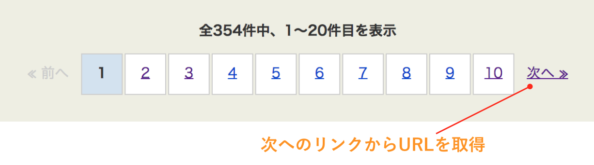
次のページへのリンク先がなくなったときにスクレイピングを終了させます。
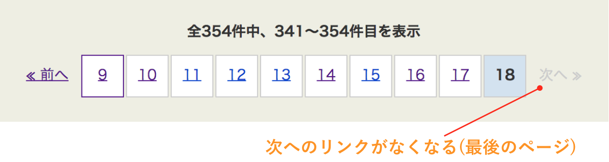
1 2 3 4 5 6 7 8 9 10 11 12 13 14 15 16 17 18 19 20 21 22 23 24 25 26 27 28 29 30 31 32 33 34 |
class Scraping
def self.movie_urls
agent = Mechanize.new
links = []
# パスの部分を変数で定義
next_url = ???
while true do
current_page = agent.get("http://eiga.com" + next_url)
elements = current_page.search('.m_unit h3 a')
elements.each do |ele|
links << ele.get_attribute('href')
end
# 「次へ」を表すタグを取得
next_link = ???
# そのタグからhref属性の値を取得
next_url = ???
# next_urlがなかったらwhile文を抜ける
unless ???
???
end
end
links.each do |link|
get_product('http://eiga.com' + link)
end
end
end
|
映画の情報は「監督名」や「あらすじ」、「公開日」など様々なものがあります。スクレイピングするならこれらの情報もまとめて取得しておきたいところです。
| カラム名 | 型 | 情報 |
|---|---|---|
| director | string | 監督名 |
| detail | text | あらすじ |
| open_date | string | 公開日 |
テーブルにカラムを追加したり、削除するようなテーブルの構造を変えたいときもマイグレーションファイルを作成します。作成にはrails generate migrationコマンドを使用します。このコマンドはマイグレーションファイルを新しく作るためのものです。
1 2 |
$ bundle exec rails g migration AddRateToProducts
# => マイグレーションファイルの作成
|
rails generate migrationに続けてクラス名を指定します。このコマンドで指定したクラス名のマイグレーションファイルが作成されます。また generate は g と省略することができます。「db > migrate」に20141027115020_add_rate_to_products.rbというファイルが作成されました。中身は以下のようになっています。
1 2 3 4 5 |
class AddRateToProducts < ActiveRecord::Migration
def change
end
end
|
メソッドchangeの中にテーブル構造の変更を書きます。
例えば、BooksテーブルにInteger型のカラムpriceを追加するため
1 2 3 4 5 |
class AddPriceToBooks < ActiveRecord::Migration
def change
add_column :books, :price, :integer
end
end
|
add_columnをマイグレーションファイルのchangeメソッド内に書くとカラムの追加ができます。記述方法は以下です。
1 |
add_column :テーブル名, :カラム名, :カラムの型
|
複数のカラムを追加する場合は以下のよう改行をして続けて記述します。
1 2 |
add_column :テーブル名, :カラム名, :カラムの型
add_column :テーブル名, :カラム名, :カラムの型
|
マイグレーションファイルのchangeメソッドではカラムを追加だけでなく削除もできます。remove_columnをマイグレーションファイルのchangeメソッド内に書くとカラムの削除ができます。記述方法は以下です。
1 |
remove_column :テーブル名, :カラム名, :カラムの型
|
マイグレーションファイルに書いたテーブルの変更内容をテーブルに反映させるにはターミナルでrake db:migrateコマンドを実行します。
マイグレーションの実行
1 2 3 4 |
$ bundle exec rake db:migrate
== AddPriceToBooks: migrating ==========================
-- add_column(:books, :price, :integer)
-> 0.0500s
|
上の例ではマイグレーションファイルAddPriceToBooksが実行され、booksテーブル内にinteger型のpriceカラムが追加されました。
このようにテーブルの変更を行うときは必ずマイグレーションファイルを作成しましょう。また、分からなくなった際はrails generate migrationコマンドを振り返りましょう。
Sequel Proのようなデータベースを操作できるアプリケーションを使うとそのアプリケーションからカラムの追加や削除ができます。しかし、アプリケーションから操作してしまうと複数人で開発している場合、開発者ごとにデータベースのテーブル構造が異なるという問題が起きてしまいます。そのため、テーブル構造を変えるときは必ずマイグレーションファイルを作成し、マイグレーションを実行することでテーブル構造を操作するようにしましょう。
| カラム名 | 型 | 情報 |
|---|---|---|
| director | string | 監督名 |
| detail | text | あらすじ |
| open_date | string | 公開日 |
rails g migrationコマンドでマイグレーションファイルを作成しましょうadd_columnを使用してテーブルに指定のカラムを追加するような記述をマイグレーションファイルにしましょうbundle exec rake db:migrateコマンドでマイグレーションファイルを実行しますきちんと追加されていれば、新たに３つのカラムがproductsテーブルの中に作成されています。
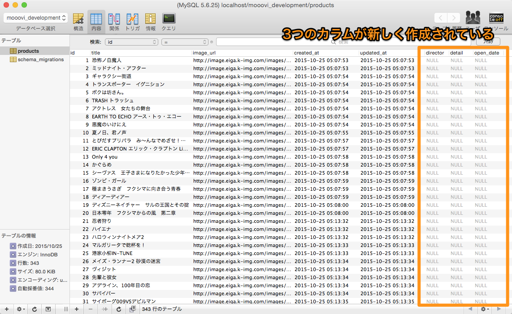
カラムを追加したら、それらのデータを実際にデータベースに保存したいですね。映画.comで映画の個別ページには「監督名」、「あらすじ」、「公開日」が載っています。これらをスクレイピングで取得し、Productsテーブルに保存しましょう。
これらの値を取得する際に注意しなくてはならないことは、作品によっては監督名等が記載されていない場合があるということです。この時、searchメソッドあるいはatメソッドで取得したタグがnilになっている恐れがあります。これに対してget_attributeメソッドやinner_textメソッドを使うとNoMethodErrorとなってしまいます。これを回避する必要があります（問題9の解説を参照してください）。
さて、すでに取得してある映画情報にカラムを追加しなくてはいけません。first_or_initializeメソッドを使えば条件に当てはまるレコードがテーブルに保存されていればそのレコードのインスタンスを取得できます。
取得したインスタンスのカラムを更新するにはインスタンス.カラム名 = 値という記述方法を使うのでした。
1 2 3 4 5 |
product = Product.where(条件).first_or_initialize
# カラムの更新
product.director = 監督名
# 中略
product.save
|
最後にsaveするのを忘れないようにしましょう。
「インスタンス.カラム名 = 値」の式を使いましょうScraping.movie_urlsを実行しましょうきちんと情報が保存されていれば、以下のように表示されます。
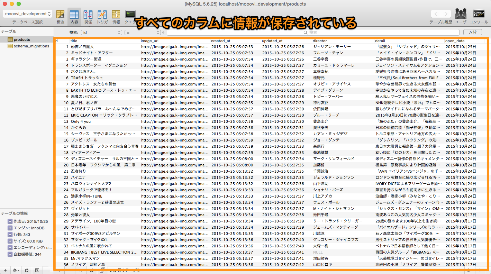
以下が完成の一例です。他の記述の方法もありますので参考までにご確認ください。
1 2 3 4 5 6 7 8 9 10 11 12 13 14 15 16 17 18 19 20 21 22 23 24 25 26 27 28 29 30 31 32 33 34 35 36 37 38 39 |
class Scraping
def self.movie_urls
agent = Mechanize.new
links = []
next_url= "/now/"
while true
current_page = agent.get("http://eiga.com" + next_url)
elements = current_page.search('.m_unit h3 a')
elements.each do |ele|
links << ele.get_attribute('href')
end
next_link = current_page.at('.next_page')
next_url = next_link.get_attribute('href')
break unless next_url
end
links.each do |link|
get_product('http://eiga.com' + link)
end
end
def self.get_product(link)
agent = Mechanize.new
page = agent.get(link)
title = page.at('.moveInfoBox h1').inner_text
image_url = page.at('.pictBox img')[:src] if page.at('.pictBox img')
director = page.at('.f span').inner_text if page.at('.f span')
detail = page.at('.outline p').inner_text
open_date = page.at('.opn_date strong').inner_text if page.at('.opn_date strong')
product = Product.where(title: title, image_url: image_url).first_or_initialize
product.director = director
product.detail = detail
product.open_date = open_date
product.save
end
end
|
このようなソースコードが書けたら次のカリキュラムへ進みましょう。
お疲れ様でした！このカリキュラムの終わりに確認問題を解きましょう。
 大宅 誠人
大宅 誠人